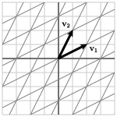

Section 3.2 Bases and coordinate systems
When working in the plane, we are used to thinking about standard Cartesian coordinates. If we mention the point \((4,3)\text{,}\) we know that we arrive at this point from the origin by moving four units to the right and three units up.
Sometimes, however, it is more natural to work in a different coordinate system. Suppose, for instance, that you live in the city whose map is shown in Figure 3.2.1 and that you would like to give a guest directions for getting from your house to the store. You would probably say something like, "Go four blocks up Maple. Then turn left on Main for three blocks." The grid of streets in the city gives a more natural coordinate system than standard north-south, east-west coordinates.
In this section, we will develop the concept of a basis through which we will create new coordinate systems in \(\real^m\text{.}\) We will see that the right choice of a coordinate system provides a more natural way to approach some problems.
Preview Activity 3.2.1.
Consider the vectors
in \(\real^2\text{.}\)
Indicate the linear combination \(\vvec_1 - 2\vvec_2\) on Figure 3.2.2.
Figure 3.2.2. Linear combinations of \(\vvec_1\) and \(\vvec_2\text{.}\) Express the vector \(\twovec{-3}{0}\) as a linear combination of \(\vvec_1\) and \(\vvec_2\text{.}\)
Find the linear combination \(10\vvec_1 - 13\vvec_2\text{.}\)
Express the vector \(\twovec{16}{-4}\) as a linear combination of \(\vvec_1\) and \(\vvec_2\text{.}\)
Explain why every vector in \(\real^2\) can be written as a linear combination of \(\vvec_1\) and \(\vvec_2\) in exactly one way.
In the preview activity, we worked with a set of two vectors in \(\real^2\) and found that we could express any vector in \(\real^2\) in two different ways: in the usual way where the components of the vector describe horizontal and vertical changes, and in a new way as a linear combination of \(\vvec_1\) and \(\vvec_2\text{.}\) We could also translate between these two different descriptions. This example illustrates the central idea of this section.
Subsection 3.2.1 Bases
In the preview activity, we created a new coordinate system for \(\real^2\) using linear combinations of a set of vectors. As we work to do this more generally, the following definition will guide us.
Definition 3.2.3.
A set of vectors \(\vvec_1,\vvec_2,\ldots,\vvec_n\) in \(\real^m\) is called a basis for \(\real^m\) if the set of vectors spans \(\real^m\) and is linearly independent.
We will look at some examples of bases in the following activity.
Activity 3.2.2.
-
In the preview activity, we considered a set of vectors in \(\real^2\text{:}\)
\begin{equation*} \vvec_1 = \twovec{2}{1}, \vvec_2 = \twovec{1}{2}\text{.} \end{equation*}Explain why these vectors form a basis for \(\real^2\text{.}\)
-
Consider the set of vectors in \(\real^3\)
\begin{equation*} \vvec_1 = \threevec{1}{1}{1}, \vvec_2 = \threevec{0}{1}{-1}, \vvec_3 = \threevec{1}{0}{-1}\text{.} \end{equation*}and determine whether they form a basis for \(\real^3\text{.}\)
-
Do the vectors
\begin{equation*} \vvec_1 = \threevec{-2}{1}{3}, \vvec_2 = \threevec{3}{0}{-1}, \vvec_3 = \threevec{1}{1}{0}, \vvec_4 = \threevec{0}{3}{-2} \end{equation*}form a basis for \(\real^3\text{?}\)
Explain why the vectors \(\evec_1,\evec_2,\evec_3\) form a basis for \(\real^3\text{.}\)
-
If a set of vectors \(\vvec_1,\vvec_2,\ldots,\vvec_n\) forms a basis for \(\real^m\text{,}\) what can you guarantee about the pivot positions of the matrix
\begin{equation*} \left[\begin{array}{rrrr} \vvec_1 \amp \vvec_2 \amp \ldots \amp \vvec_n \end{array}\right]\text{?} \end{equation*} If the set of vectors \(\vvec_1,\vvec_2,\ldots,\vvec_n\) is a basis for \(\real^{10}\text{,}\) how many vectors must be in the set?
We can develop a test to determine if a set of vectors \(\vvec_1,\vvec_2,\ldots,\vvec_n\) forms a basis for \(\real^m\) by considering the matrix
To be a basis, this set of vectors must span \(\real^m\) and be linearly independent.
We know that the set of vectors spans \(\real^m\) if and only if \(A\) has a pivot position in every row. We also know that the set of vectors is linearly independent if and only if \(A\) has a pivot position in every column. This means that a set of vectors forms a basis if and only if \(A\) has a pivot in every row and every column. Therefore, \(A\) must be row equivalent to the identify matrix \(I\text{:}\)
In addition to helping identify bases, this fact tells us something important about the number of vectors in a basis. Since the matrix \(A\) has a pivot position in every row and every column, it must have the same number of rows as columns. Therefore, the number of vectors in a basis for \(\real^m\) must be \(m\text{.}\) For example, a basis for \(\real^{10}\) must have exactly 10 vectors.
Example 3.2.4.
It is worth pointing out that we first encountered a basis long ago when we considered the vectors in \(\real^3\text{:}\)
We see that these vectors are, in fact, the columns of the \(3\times3\) identity matrix, which confirms that this set forms a basis.
More generally, the set of vectors \(\evec_1,\evec_2,\ldots,\evec_m\) forms a basis for \(\real^m\text{,}\) which we call the standard basis for \(\real^m\text{.}\)
Subsection 3.2.2 Coordinate systems
If we have a basis for \(\real^m\text{,}\) we can use it to form a coordinate system as we will now describe. Rather than continuing to write a list of vectors, we will find it convenient to denote a basis using a single symbol, such as
Example 3.2.5.
In this section's preview activity, we considered the vectors
which form a basis \(\bcal=\{\vvec_1,\vvec_2\}\) for \(\real^2\text{.}\)
In the standard coordinate system, the point \((2,-3)\) is found by moving 2 units to the right and 3 units down. We would like to define a new coordinate system where we interpret \((2,-3)\) to mean we move two times along \(\vvec_1\) and 3 times along \(-\vvec_2\text{.}\) As we see in the figure, doing so leaves us at the point \((1,-4)\text{,}\) expressed in the usual coordinate system.
We have seen that
The coordinates of the vector \(\xvec\) in the new coordinate system are the weights that we use to create \(\xvec\) as a linear combination of \(\vvec_1\) and \(\vvec_2\text{.}\)
Since we now have two descriptions of the vector \(\xvec\text{,}\) we need some notation to keep track of which coordinate system we are using. Because \(\twovec{1}{-4} = 2\vvec_1 - 3\vvec_2\text{,}\) we will write
More generally, \(\coords{\xvec}{\bcal}\) will denote the coordinates of \(\xvec\) in the basis \(\bcal\text{;}\) that is, \(\coords{\xvec}{\bcal}\) is the vector \(\twovec{c_1}{c_2}\) of weights such that
To illustrate, if the coordinates of \(\xvec\) in the basis \(\bcal\) are
then
We conclude that
This demonstrates how we can translate coordinates in the basis \(\bcal\) into standard coordinates.
Suppose we know the expression of a vector \(\xvec\) in standard coordinates. How can we find its coordinates in the basis \(\bcal\text{?}\) For instance, suppose \(\xvec=\twovec{-8}{2}\) and that we would like to find \(\coords{\xvec}{\bcal}\text{.}\) We have
where
or
This linear system for the weights defines an augmented matrix
Therefore,
This example illustrates how a basis in \(\real^2\) provides a new coordinate system for \(\real^2\) and shows how we may translate between this coordinate system and the standard one.
More generally, suppose that \(\bcal=\{\vvec_1,\vvec_2,\ldots,\vvec_m\}\) is a basis for \(\real^m\text{.}\) We know that the vectors span \(\real^m\text{,}\) which implies that any vector \(\xvec\) in \(\real^m\) can be written as a linear combination of the vectors. In addition, we know that the vectors are linearly independent, which means that we can write \(\xvec\) as a linear combination of the vectors in exactly one way. Therefore, we have
where the weights \(c_1, c_2,\ldots, c_m\) are unique. In this case, we write the coordinate description of \(\xvec\) in the basis \(\bcal\) as
Activity 3.2.3.
Let's begin with the basis \(\bcal = \{\vvec_1,\vvec_2\}\) of \(\real^2\) where
If the coordinates of \(\xvec\) in the basis \(\bcal\) are \(\coords{\xvec}{\bcal} = \twovec{-2}{4}\text{,}\) what is the vector \(\xvec\text{?}\)
If \(\xvec = \twovec{3}{5}\text{,}\) find the coordinates of \(\xvec\) in the basis \(\bcal\text{;}\) that is, find \(\coords{\xvec}{\bcal}\text{.}\)
Find a matrix \(A\) such that, for any vector \(\xvec\text{,}\) we have \(\xvec = A\coords{\xvec}{\bcal}\text{.}\) Explain why this matrix is invertible.
Using what you found in the previous part, find a matrix \(B\) such that, for any vector \(\xvec\text{,}\) we have \(\coords{\xvec}{\bcal} = B\xvec\text{.}\) What is the relationship between the two matrices you have found in this and the previous part? Explain why this relationship holds.
-
Suppose we also consider the basis
\begin{equation*} \ccal = \left\{\twovec{1}{2}, \twovec{-2}{1}\right\}\text{.} \end{equation*}Find a matrix \(C\) that converts coordinates in the basis \(\ccal\) into coordinates in the basis \(\bcal\text{;}\) that is,
\begin{equation*} \coords{\xvec}{\bcal} = C \coords{\xvec}{\ccal}\text{.} \end{equation*}You may wish to think about converting coordinates from the basis \(\ccal\) into the standard coordinate system and then into the basis \(\bcal\text{.}\)
-
Suppose we consider the standard basis
\begin{equation*} \ecal = \{\evec_1,\evec_2\}\text{.} \end{equation*}What is the relationship between \(\xvec\) and \(\coords{\xvec}{\ecal}\text{?}\)
This activity demonstrates how we can efficiently convert between coordinate systems defined by different bases. Let's consider a basis \(\bcal = \{\vvec_1,\vvec_2,\ldots,\vvec_m\}\) and a vector \(\xvec\text{.}\) We know that
If we use \(C_{\bcal}\) to denote the matrix whose columns are the basis vectors, then we find that
where \(C_{\bcal} = \left[\begin{array}{rrrr} \vvec_1 \amp \vvec_2 \amp \ldots \amp \vvec_m \end{array}\right]\text{.}\) This means that the matrix \(C_{\bcal}\) converts coordinates in the basis \(\bcal\) into standard coordinates.
Since the columns of \(C_{\bcal}\) are the basis vectors \(\vvec_1,\vvec_2,\ldots,\vvec_m\text{,}\) we know that \(C_{\bcal} \sim I_m\) because this set of vectors is linearly independent and spans \(\real^m\text{.}\) Therefore, \(C_{\bcal}\) is invertible. Since we have
we must also have
To summarize, we see that \(C_{\bcal}\) converts coordinates in the basis \(\bcal\) into standard coordinates, and \(C_{\bcal}^{-1}\) converts standard coordinates into coordinates in the basis \(\bcal\text{.}\)
If we have another basis \(\ccal\text{,}\) we find, in the same way, that \(\xvec = C_{\ccal}\coords{\xvec}{\ccal}\) for the conversion between coordinates in the basis \(\ccal\) into standard coordinates. We then have
Therefore, \(C_{\bcal}^{-1}C_{\ccal}\) is the matrix that converts \(\ccal\)-coordinates into \(\bcal\)-coordinates.
In spite of the fact that much of what we are doing here seems new, we have been using the standard basis all along. For example, if \(\xvec\) is a vector, then
The matrix \(C_{\ecal}\) is, of course, the identity.
Subsection 3.2.3 Examples of bases
We will now look at some examples of bases and begin to see the usefulness of looking at a problem in a different coordinate system.
Example 3.2.6.
Let's consider the basis of \(\real^3\text{:}\)
It is relatively straightforward to convert a vector's representation in this basis to the standard basis, using the matrix whose columns are the basis vectors:
For example, suppose that the vector \(\xvec\) is described in the coordinate system defined by the basis as \(\coords{\xvec}{\bcal} = \threevec{2}{-2}{1}\text{.}\) We then have
Consider now the vector \(\xvec=\threevec{3}{1}{-2}\text{.}\) If we would like to express \(\xvec\) in the coordinate system defined by \(\bcal\text{,}\) then we compute
Example 3.2.7.
Suppose we work for a company that records its quarterly revenue, in millions of dollars, as:
| Quarter | Revenue |
| 1 | 10.3 |
| 2 | 13.1 |
| 3 | 7.5 |
| 4 | 8.2 |
Rather than using a table to record the data, we could display it in a graph or write it as a vector in \(\real^4\text{:}\)
Let's now consider a new basis \(\bcal\) for \(\real^4\) using vectors
We may view these basis elements graphically, as in Figure 3.2.9

As we wish to convert our revenue vectors into the coordinates given by \(\bcal\text{,}\) we form the matrices:
and compute
This means that our revenue vector is
We will think about what these coordinates mean by adding the basis vectors together one at a time.
The first coordinate gives us the average revenue over the year: \(9.775\vvec_1\text{.}\)
Adding in the second component shows how the averages in the first and second halves of year differ from the annual average: \(9.775\vvec_1 + 1.925\vvec_2\text{.}\)
The third and fourth components break down the behavior in the first and second halves of the year into quarters:
If we write \(\coords{\xvec}{\bcal} = \fourvec{c_1}{c_2}{c_3}{c_4}\text{,}\) we see that the coefficient \(c_1\) measures the average revenue over the year, \(c_2\) measures the deviation from the annual average in the first and second halves of the year, and \(c_3\) measures how the revenue in the first and second quarter differs from the average in the first half of the year. In this way, the coefficients provide a view of the revenue over different time scales, from an annual summary to a finer view of quarterly behavior.
This basis is sometimes called a Haar wavelet basis, and the change of basis is known as a Haar wavelet transform. In the next section, we will see how this basis provides a useful way to store digital images.
Activity 3.2.4. Edge detection.
An important problem in the field of computer vision is to detect edges in a digital photograph, as is shown in Figure 3.2.10. Edge detection algorithms are useful when, say, we want a robot to locate an object in its field of view. Graphic designers also use these algorithms to create artist effects.


We will consider a very simple version of an edge detection algorithm to give a sense of how this works. Rather than considering a two-dimensional photograph, we will think about a one-dimensional row of pixels in a photograph. The grayscale values of a pixel measure the brightness of a pixel; a grayscale value of 0 corresponds to black, and a value of 255 corresponds to white.
Suppose, for simplicity, that the grayscale values for a row of six pixels are represented by a vector \(\xvec\) in \(\real^6\text{:}\)
We can easily see that there is a jump in brightness between pixels 4 and 5, but how can we detect it computationally? We will introduce a new basis \(\bcal\) for \(\real^6\) with vectors:
Construct the matrix \(C_\bcal\) that relates the standard coordinate system with the coordinates in the basis \(\bcal\text{.}\)
Determine the matrix \(C_\bcal^{-1}\) that converts the representation of \(\xvec\) in standard coordinates into the coordinate system defined by \(\bcal\text{.}\)
-
Suppose the vectors are expressed in general terms as
\begin{equation*} \xvec = \left[\begin{array}{r} x_1 \\ x_2 \\ x_3 \\ x_4 \\ x_5 \\ x_6 \end{array}\right], \coords{\xvec}{\bcal} = \left[\begin{array}{r} c_1 \\ c_2 \\ c_3 \\ c_4 \\ c_5 \\ c_6 \end{array}\right]\text{.} \end{equation*}Using the relationship \(\coords{\xvec}{\bcal} = C_{\bcal}^{-1}\xvec\text{,}\) determine an expression for the coefficient \(c_2\) in terms of \(x_1,x_2,\ldots,x_6\text{.}\) What does \(c_2\) measure in terms of the grayscale values of the pixels? What does \(c_4\) measure in terms of the grayscale values of the pixels?
-
Now for the specific vector
\begin{equation*} \xvec = \left[\begin{array}{r} 25 \\ 34 \\ 30 \\ 45 \\ 190 \\ 200 \end{array}\right]\text{,} \end{equation*}determine the representation of \(\xvec\) in the \(\bcal\)-coordinate system.
Explain how the coefficients in \(\coords{\xvec}{\bcal}\) determine the location of the jump in brightness in the grayscale values represented by the vector \(\xvec\text{.}\)
Readers who are familiar with calculus may recognize that this change of basis converts a vector \(\xvec\) into \(\coords{\xvec}{\bcal}\text{,}\) the set of changes in \(\xvec\text{.}\) This process is similar to differentiation in calculus. Similarly, the process of converting \(\coords{\xvec}{\bcal}\) into the vector \(\xvec\) adds together the changes in a process similar to integration. This change of basis, therefore, represents a linear algebraic version of the Fundamental Theorem of Calculus.
Subsection 3.2.4 Summary
We defined a basis to be a set of vectors \(\bcal = \{\vvec_1,\vvec_2,\ldots,\vvec_n\}\) that spans \(\real^m\) and is linearly independent.
-
A set of vectors forms a basis for \(\real^m\) if and only if the matrix
\begin{equation*} A = \left[\begin{array}{rrrr} \vvec_1 \amp \vvec_2 \amp \ldots \amp \vvec_n \end{array}\right] \sim I\text{.} \end{equation*}This means there must be \(m\) vectors in a basis for \(\real^m\text{.}\)
If \(\vvec_1,\vvec_2,\ldots,\vvec_m\) forms a basis for \(\real^m\text{,}\) then any vector in \(\real^m\) can be written as a linear combination of the vectors in exactly one way.
-
We used the basis \(\bcal\) to define a coordinate system in which \(\coords{\xvec}{\bcal} = \fourvec{c_1}{c_2}{\vdots}{c_n} \text{,}\) the coordinates of \(\xvec\) in the basis \(\bcal\text{,}\) are defined by
\begin{equation*} \xvec = c_1\vvec_1+c_2\vvec_2 + \ldots + c_n\vvec_m\text{.} \end{equation*} -
Forming the matrix \(C_{\bcal}\) whose columns are the basis vectors, we can convert between coordinate systems:
\begin{equation*} \begin{aligned} x \amp {}={} C_{\bcal}\coords{\xvec}{\bcal} \\ C_{\bcal}^{-1} x \amp {}={} \coords{\xvec}{\bcal} \\ \end{aligned}\text{.} \end{equation*}
Exercises 3.2.5 Exercises
1.
Shown in Figure 3.2.11 are two vectors \(\vvec_1\) and \(\vvec_2\) in the plane \(\real^2\text{.}\)
Explain why \(\bcal=\{\vvec_1,\vvec_2\}\) is a basis for \(\real^2\text{.}\)
-
Using Figure 3.2.11, indicate the vectors \(\xvec\) such that
\(\displaystyle \coords{\xvec}{\bcal} = \twovec{2}{-1}\)
\(\displaystyle \coords{\xvec}{\bcal} = \twovec{-1}{-2}\)
\(\displaystyle \coords{\xvec}{\bcal} = \twovec{0}{3}\)
-
Using Figure 3.2.11, find the representation \(\coords{\xvec}{\bcal}\) if
\(\xvec = \twovec{-2}{-1}\text{.}\)
\(\xvec = \twovec{2}{4}\text{.}\)
\(\xvec = \twovec{2}{-5}\text{.}\)
Find \(\coords{\xvec}{\bcal}\) if \(\xvec=\twovec{60}{90}\text{.}\)
2.
Consider vectors
and let \(\bcal = \{\vvec_1,\vvec_2\}\) and \(\ccal = \{\wvec_1,\wvec_2\}\text{.}\)
Explain why \(\bcal\) and \(\ccal\) are both bases of \(\real^2\text{.}\)
If \(\xvec = \twovec{5}{-3}\text{,}\) find \(\coords{\xvec}{\bcal}\) and \(\coords{\xvec}{\ccal}\text{.}\)
If \(\coords{\xvec}{\bcal}=\twovec{2}{-4}\text{,}\) find \(\xvec\) and \(\coords{\xvec}{\ccal}\text{.}\)
If \(\coords{\xvec}{\ccal}=\twovec{-3}{2}\text{,}\) find \(\xvec\) and \(\coords{\xvec}{\bcal}\text{.}\)
Find a matrix \(D\) such that \(\coords{\xvec}{\bcal} = D\coords{\xvec}{\ccal}\text{.}\)
3.
Consider the following vectors in \(\real^4\text{:}\)
Explain why \(\bcal=\{\vvec_1,\vvec_2,\vvec_3,\vvec_4\}\) forms a basis for \(\real^4\text{.}\)
Explain how to convert \(\coords{\xvec}{\bcal}\text{,}\) the representation of a vector \(\xvec\) in the coordinates defined by \(\bcal\text{,}\) into \(\xvec\text{,}\) its representation in the standard coordinate system.
Explain how to convert the vector \(\xvec\) into, \(\coords{\xvec}{\bcal}\text{,}\) its representation in the coordinate system defined by \(\bcal\text{.}\)
If \(\xvec=\fourvec{23}{12}{10}{19}\text{,}\) find \(\coords{\xvec}{\bcal}\text{.}\)
If \(\coords{\xvec}{\bcal}=\fourvec{3}{1}{-3}{-4}\text{,}\) find \(\xvec\text{.}\)
4.
Consider the following vectors in \(\real^3\text{:}\)
Do these vectors form a basis for \(\real^3\text{?}\) Explain your thinking.
Find a subset of these vectors that forms a basis of \(\real^3\text{.}\)
-
Suppose you have a set of vectors \(\vvec_1, \vvec_2,\ldots,\vvec_6\) in \(\real^4\) such
\begin{equation*} \left[\begin{array}{rrrr} \vvec_1 \amp \vvec_2 \amp \ldots \amp \vvec_6 \end{array}\right] \sim \left[\begin{array}{rrrrrr} 1 \amp 0 \amp -2 \amp 0 \amp 1 \amp 0 \\ 0 \amp 1 \amp 3 \amp 0 \amp -4 \amp 0 \\ 0 \amp 0 \amp 0 \amp 1 \amp 2 \amp 0 \\ 0 \amp 0 \amp 0 \amp 0 \amp 0 \amp 1 \\ \end{array}\right]\text{.} \end{equation*}Find a subset of the vectors that span \(\real^4\text{.}\)
5.
This exercise involves a simple Fourier transform, which will play an important role in the next section.
Suppose that we have the vectors
Explain why \(\bcal=\{\vvec_1,\vvec_2,\vvec_3\}\) is a basis for \(\real^3\text{.}\)
If \(\xvec=\threevec{15}{15}{15}\text{,}\) find \(\coords{\xvec}{\bcal}\text{.}\)
Find the matrices \(C_{\bcal}\) and \(C_{\bcal}^{-1}\text{.}\) If \(\xvec=\threevec{x_1}{x_2}{x_3}\) and \(\coords{\xvec}{\bcal} = \threevec{c_1}{c_2}{c_3}\text{,}\) explain why \(c_1\) is the average of \(x_1\text{,}\) \(x_2\text{,}\) and \(x_3\text{.}\)
6.
Determine whether the following statements are true or false and provide a justification for your response.
If the columns of a matrix \(A\) form a basis for \(\real^m\text{,}\) then \(A\) is invertible.
There must be 125 vectors in a basis for \(\real^{125}\text{.}\)
If \(\bcal=\{\vvec_1,\vvec_2,\ldots,\vvec_n\}\) is a basis of \(\real^m\text{,}\) then every vector in \(\real^m\) can be expressed as a linear combination of basis vectors.
The coordinates \(\coords{\xvec}{\bcal}\) are the weights that form \(\xvec\) as a linear combination of basis vectors.
If the basis vectors form the columns of the matrix \(C_{\bcal}\text{,}\) then \(\coords{\xvec}{\bcal} = C_{\bcal}\xvec\text{.}\)
7.
Provide a justification for your response to each of the following questions.
Suppose you have \(m\) linearly independent vectors in \(\real^m\text{.}\) Can you guarantee that they form a basis of \(\real^m\text{?}\)
If \(A\) is an invertible \(m\times m\) matrix, do the columns necessarily form a basis of \(\real^m\text{?}\)
Suppose we have an invertible \(m\times m\) matrix \(A\text{,}\) and we perform a sequence of row operations on \(A\) to form a matrix \(B\text{.}\) Can you guarantee that the columns of \(B\) form a basis for \(\real^m\text{?}\)
8.
Crystallographers find it convenient to use coordinate systems that are adapted to the specific geometry of a crystal. As a two-dimensional example, consider a layer of graphite in which carbon atoms are arranged in regular hexagons to form the crystalline structure shown in Figure 3.2.12.
The origin of the coordinate system is at the carbon atom labeled by “0”. It is convenient to choose the basis \(\bcal\) defined by the vectors \(\vvec_1\) and \(\vvec_2\) and the coordinate system it defines.
-
Locate the points \(\xvec\) for which
\(\coords{\xvec}{\bcal} = \twovec{1}{0}\text{,}\)
\(\coords{\xvec}{\bcal} = \twovec{0}{1}\text{,}\)
\(\coords{\xvec}{\bcal} = \twovec{2}{1}\text{.}\)
Find the coordinates \(\coords{\xvec}{\bcal}\) for all the carbon atoms in the hexagon whose lower left vertex is labeled “0”.
What are the coordinates \(\coords{\xvec}{\bcal}\) of the center of that hexagon, which is labeled “C”?
How do the coordinates of the atoms in the hexagon whose lower left corner is labeled “1” compare to the coordinates in the hexagon whose lower left corner is labeled "0"?
Does the point \(\xvec\) whose coordinates are \(\coords{\xvec}{\bcal} = \twovec{16}{4}\) correspond to a carbon atom or the center of a hexagon?
9.
Suppose that \(A=\left[\begin{array}{rr} 2 \amp 1 \\ 1\amp 2 \\ \end{array}\right]\) and
Explain why \(\bcal=\{\vvec_1,\vvec_2\}\) is a basis for \(\real^2\text{.}\)
Find \(A\vvec_1\) and \(A\vvec_2\text{.}\)
Use what you found in the previous part of this problem to find \(\coords{A\vvec_1}{\bcal}\) and \(\coords{A\vvec_2}{\bcal}\text{.}\)
If \(\coords{\xvec}{\bcal} = \twovec{1}{-5}\text{,}\) find \(\coords{A\xvec}{\bcal} \text{.}\)
Find a matrix \(D\) such that \(\coords{A\xvec}{\bcal} = D\coords{\xvec}{\bcal}\text{.}\)
You should find that the matrix \(D\) is a very simple matrix, which means that this basis \(\bcal\) is well suited to study the effect of multiplication by \(A\text{.}\) This observation is the central idea of the next chapter.